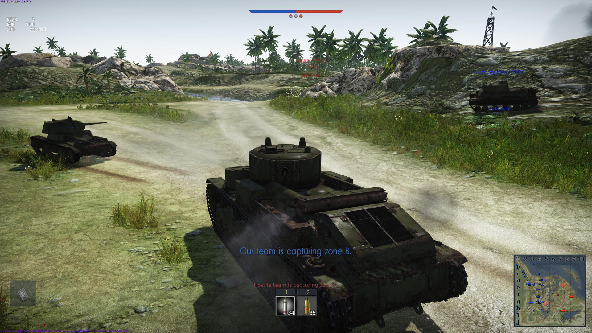

War Thunder
War Thunder je igra koja se bazira na borbu tenkova, aviona, brodova i ostalih borbenih vozila. Objavljena je u januaru 2013. godine.
Gameplay
War Thunder is based around combined arms battles on air, land, and sea. According to the game's creative director Kirill Yudintsev, it is the only game that encompasses all three of these experiences in one gameplay session.
Vehicles range from pre-World War I naval vessels, from the interwar period and the Spanish Civil War for tanks and aircraft, to the Iraq war and beyond, with an emphasis on World War II as well as an emphasis on the Vietnam War and the Cold War.
Players can control aircraft, ground vehicles, and warships from the United States, Germany, Russia, Britain, and Japan, as well as nations with smaller militaries or less prominence in conflicts, such as Italy, France, China and Sweden.
Vehicles are divided into three main categories: Aviation, Ground, and Fleet, while game modes are divided between Arcade, Realistic, and Simulator.
Aviation is divided between fixed-wing aircraft and helicopters, and Fleet is divided between "Bluewater" and "Coastal", where Bluewater represents ships from the size of destroyers to battleships and battlecruisers,
while coastal focuses on smaller ships such as motor torpedo boats, motor gunboats, subchasers, and frigates.
A single player mode is also available that focuses on historical battles, and also a cooperative mode for battling AI ground vehicles and aircraft.
Moje misljenje o igri: WT je veoma zanimljiva igra. Najzabavnija je kada igram sa drugarima zato sto je to najbolji nacin da smislimo i odradimo taktiku koju najvise volimo dok igramo sa tenkovima.
Moj omiljeni tenk je Panzer 4.
Ali ja najvise volim da igram avione i omiljeni avion mi je stuka.
Sve u svemu, War Thunder je veoma dobra i zanimljiva takticka igra.
